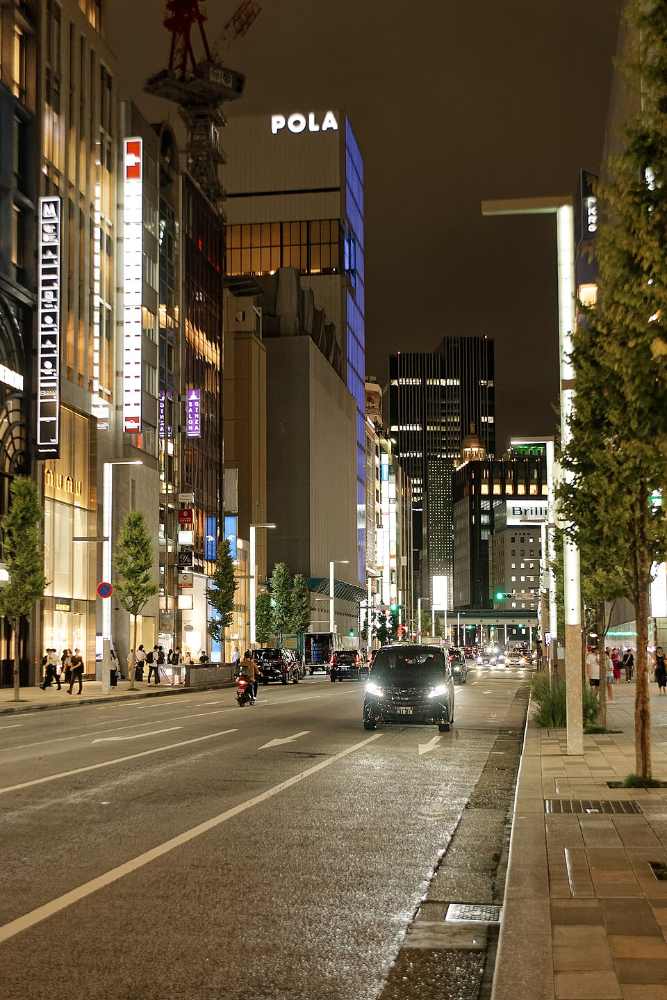
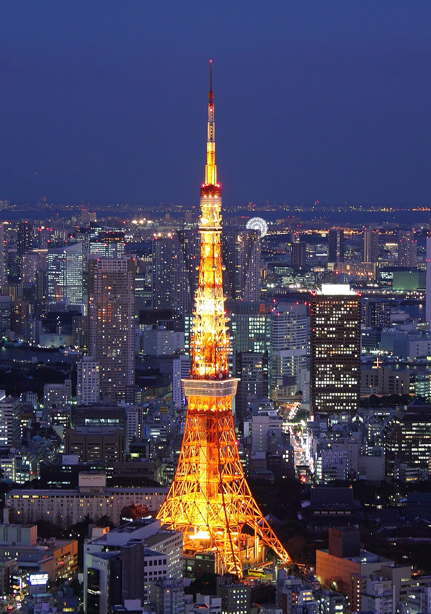
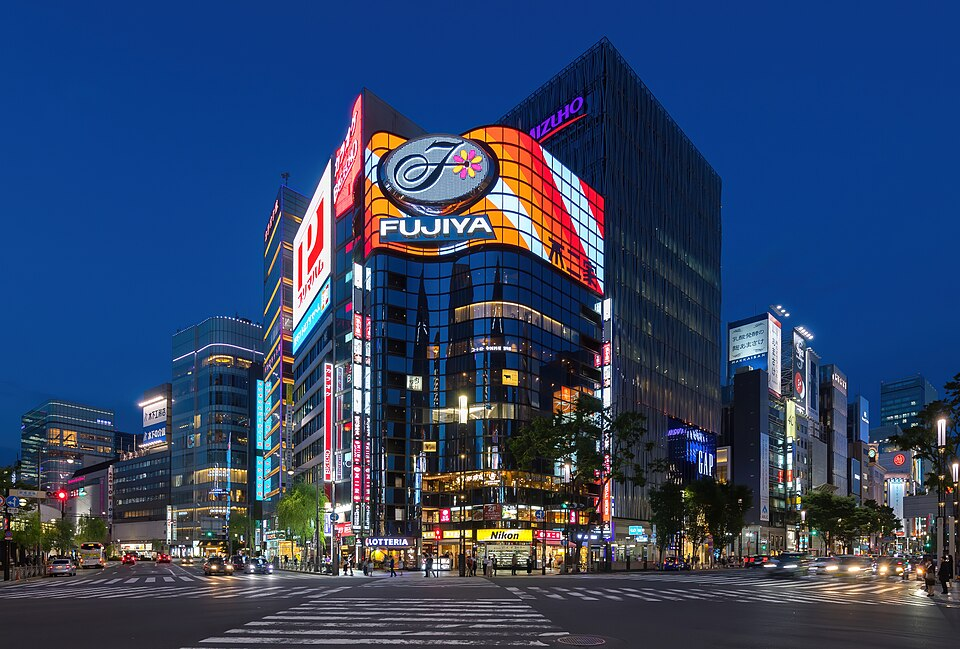

HOTEL · 5 晚
img').src=this.src">

img').src=this.src">
img').src=this.src">HOME BASE · THE PENINSULA TOKYO
The Peninsula Tokyo
酒店自述是全日本唯一拥有定制车队的酒店（劳斯莱斯 / MINI Cooper Clubman / 丰田世纪），并提供专属的「Keys to the City」在地向导服务；紧邻皇居和日比谷公园，客房宽敞、泳池 SPA 完善，是带娃家庭出了名好住的一家。走去银座只要几分钟。